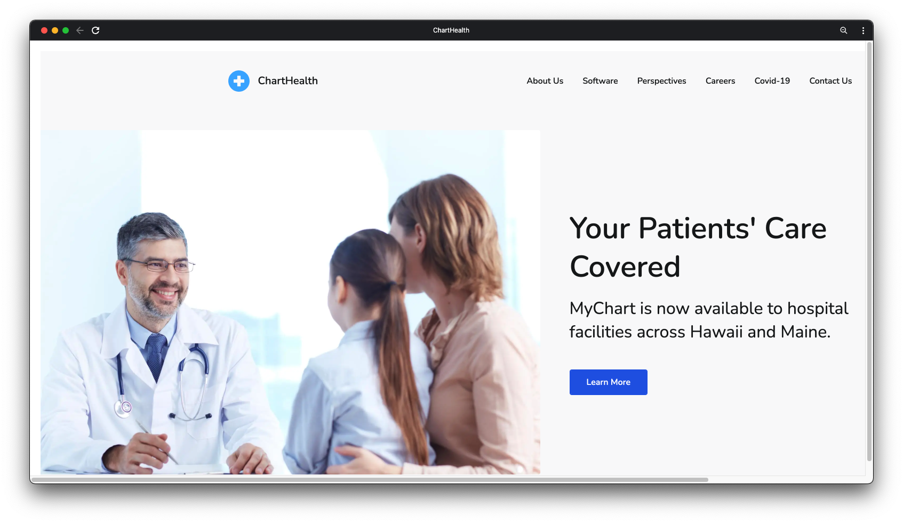
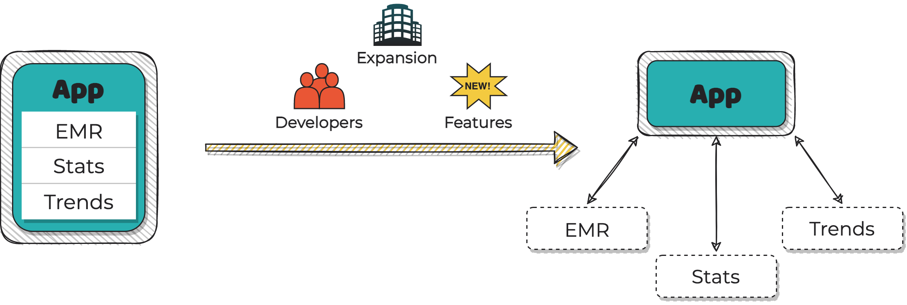
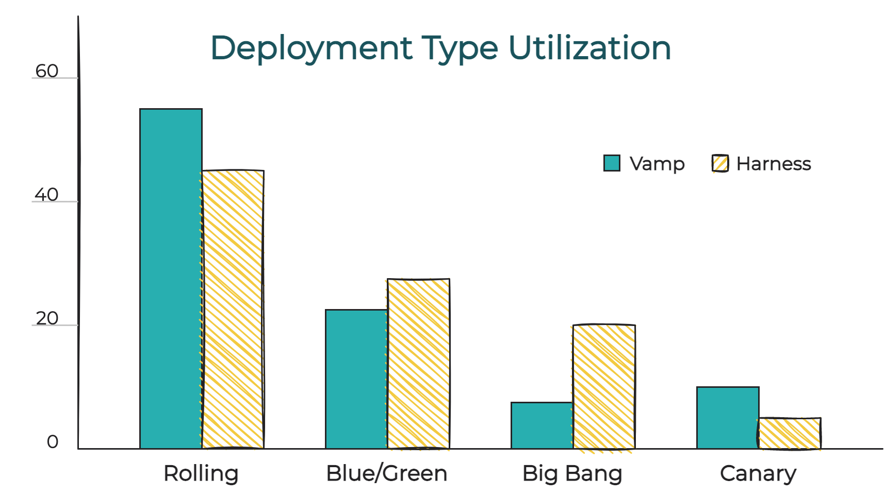
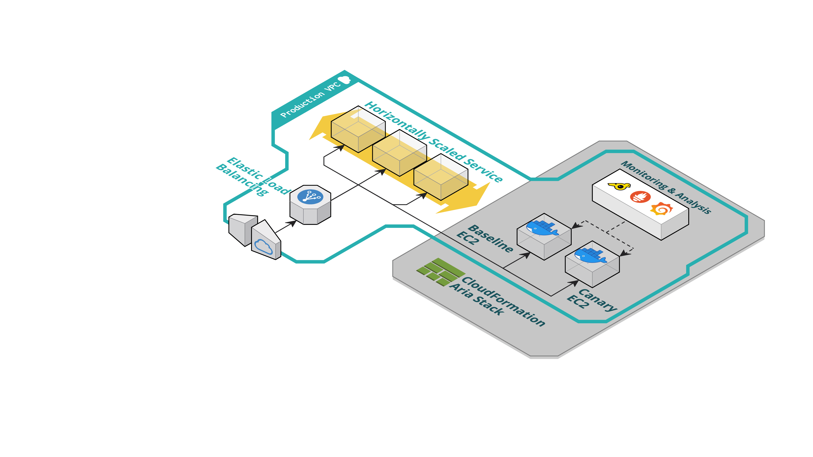
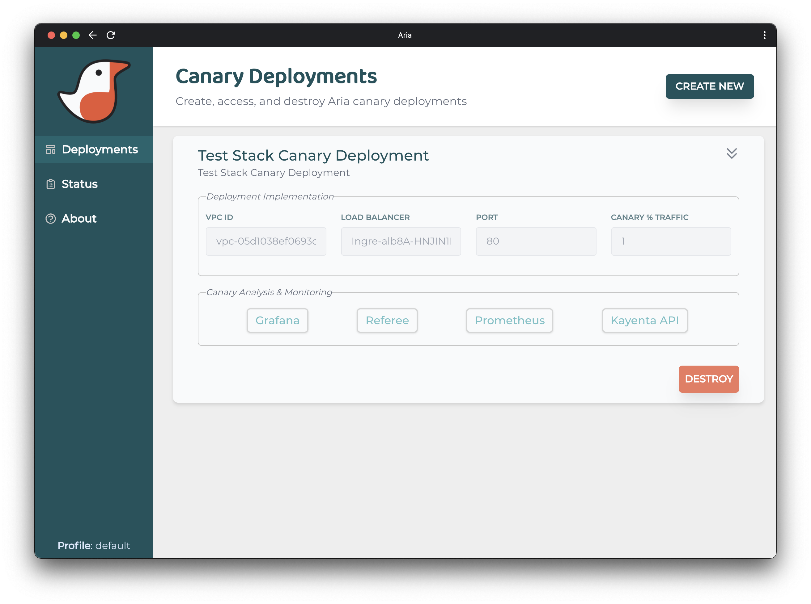

Canary deployment is a technique that allows revisions of an application or service, referred to as the
canary, to be analyzed using a subset of the real network traffic. This deployment technique minimizes
potential errors and risks for the majority of users by targeting a minority of the user base (Çeliku).
1) Canary deployments are sophisticated, require considerable configuration, and can be time consuming
to both implement and analyze.
Aria is a tool which allows users to simplify the creation, configuration, and analysis of canary
deployments. Aria automates much of the onerous infrastructure management while providing the user with
the safety and data analysis benefits of canary deploys. Thus, Aria allows the user to focus on
configuration which meaningfully impacts analysis of changes to production software.
1.1 Hypothetical
To better understand the use case for Aria, consider ChartHealth – a hypothetical company that
provides an electronic medical record software. ChartHealth’s product manages sensitive patient
information with a user base spanning hundreds of health care facilities nationally. The ChartHealth
product includes features such as: reading/writing to electronic medical records (EMR), aggregation of
patient statistics, and data science models used to identify trends across EMRs.

Recently, ChartHeath has expanded its business to include facilities in most US states spanning from
Hawaii to Maine. Additionally, ChartHealth’s software product has grown in complexity due to feature
additions as demanded by customers and evolving regulations. These additions have resulted in a rapid
growth of both the number of developers employed by the company and size of the product codebase. As a
result of expansion to facilities across five time zones, ChartHealth’s product must now have
practically zero downtime in order to not lose business to competitors offering similar products.

In order to meet these new challenges, ChartHealth has decided to migrate their current on-site
monolith architecture to a cloud-based microservice architecture. As a result of the planned
migration, the company’s monolithic product codebase has been split into multiple services owned and
operated by different teams of developers.
1.2 The Problem with Traditional Deployments
When deploying a new revision of software to the monolithic architecture, ChartHealth utilized a
traditional ‘big-bang’ software deployment technique. Big-bang software deployments update whole or
large parts of an application in one operation. The inherent downsides to big-bang deployments
include: exposure of all users to issues due to software changes, longer delays between deployments,
extensive testing of the entire codebase per deployment (Skowronski et al.). ChartHealth was able
to manage these downsides prior to the recent expansion, when its smaller developer team could more
easily manage and comprehend the entire codebase.
In the context of ChartHealth’s planned service-based architecture, there are multiple reasons that
the ‘big-bang’ approach is no longer appropriate. First, for example, the EMR management feature must
be as high-integrity as possible to satisfy government regulations. Simply replacing the EMR service
for all users in one ‘big-bang’ presents unreasonable risk which may result in inaccurate records
capture or deletion. Second, even on a service-by-service basis, if issues with new revisions of a
service are encountered, rolling back production to previous revisions of the service will likely
result in undesired downtime (Skowronski et al).
With the understanding that their deployment technique must change, ChartHealth’s technical
leadership undertakes a review of the modern deployment techniques and finds a plethora of options.
2. Modern Deployments
In the context of microservice architectures, the goal of modern deployment practices is to achieve
small and frequent service revision releases which result in zero downtime. While each of the many
unique deployment techniques share this characteristic, the approaches can be distinguished by their
tradeoffs.
With the understanding that a modern deployment strategy must be employed to facilitate deployment of
revisions on a service-by-service basis, ChartHealth begins exploring the landscape of modern
deployments. The company specifically seeks to understand which of the deployment types are most
commonly employed. ChartHealth contacts multiple companies which provide deployment solution products
and requests usage data from those suppliers.

The above chart was compiled from customer surveys conducted by two market-leading providers of
Continuous Integration and Deployment (CI/CD) products: Harness and Vamp. Both surveys indicated that
the four most common deployment techniques between the customer bases of both companies are: big bang,
rolling, blue/green, and canary(Vamp)(Harness).
2.1 Rolling Deployment
Rolling deployments introduce service revisions by incrementally replacing the current production
service code on each of multiple nodes within the architecture. This type of deployment is only
applicable if there are multiple instances of the same service operating in production. An
interesting, and perhaps desirable, aspect of rolling deployments is that the current production and
new revision of a service can coexist simultaneously for extended time periods (Çeliku 12). Rolling
deployments can also target specific user groups according to region, IP address, and a variety of
other traffic differentiators.
PROS
CONS
Rollout status transparency and control
Extended deployment timeframe
Risk limited to a subset of users
Not suitable for all-or-nothing changes
2.2 Blue/Green Deployment
Blue/green deployments require two environments: blue and green. The first environment, green
within the above diagram, is the current production environment. The second blue environment is an
almost exact replica of the green (production) environment. The only difference between their
content is the revision of the target service. After the newly introduced blue domain has completed
initialization, a network switch or load
balancer routes 100% of the incoming network traffic to either blue or green environments
exclusively.
As the deployment progresses, the traffic router redirects traffic to and from the blue or green
domains on an as needed basis. At any point in time, only one of the deployments is processing
incoming network traffic. The traffic router can maintain routing to the blue environment if the
service revision performance is acceptable. At this point, the blue environment effectively achieves
production status and the ‘older’ green domain can be destroyed (Fowler).
PROS
CONS
Instantaneous rollout and rollback
Duplicate production resources required
Simple disaster recovery
Entire user-base exposed to service revision issues
2.3 Canary Deployment
This technique involves introducing a revised instance of a service, referred to as the canary,
into the same production environment as the current production version of the service. A load
balancer routes a minority of the incoming network traffic to be served by the canary instance.
During the canary deployment, a majority of the network traffic continues to be served by the
production service. The instance is continually analyzed such that any newly introduced issues can
be detected without impacting the majority of the user base (Çeliku 13). A small amount of incoming
network traffic is directed to the canary instance initially, data on its performance is collected
and analyzed, and the amount of traffic diverted may be increased or decreased based on the analysis
(Sato).
The load balancer can divide incoming traffic based on many different criteria including: sticky
sessions, geographical region, packet addresses, packet headers, etc. This allows for the canary
service to be targeted at specific users or user groups despite executing within the production
environment.
PROS
CONS
Minimal risk exposure to user-base
Onerous configuration
High-fidelity canary analysis
Extended deployment timeframe
Disaster recovery can be complex
3. Choosing the Right Deployment Strategy
First and foremost, a deployment strategy should both align with and serve business goals. For example,
a
service owner may prioritize zero downtime when rolling out service updates because customers require
access to medical information regardless of the time of day. Some of the other considerations may
include;
cost, engineering skill set, available testing tools, potential schema changes, and others (Google SRE).
Upon reviewing the above described deployment methods, disagreement arose between the ChartHealth
developer teams. The team responsible for the Stats service favored the Big Bang approach. The team
responsible for the Trends service felt that Blue/Green deployments were more suitable for the
development
and release cadence of their service. The medical records team, chiefly concerned with data integrity,
rejected all deployment types except canary deployment.
A major benefit of adopting a microservices architecture is the decoupling that can be achieved between
services. Decoupling between services can be expressed in terms of how the service is developed,
implemented, and deployed independent of one another (Indrasiri). Thus, although each of the ChartHealth
development teams disagree on which deployment technique to utilize, each can be satisfied by adopting
the
deployment technique of their choosing.
Upon reviewing common modern deployments, the ChartHealth EMR service development team elected to adopt
canary deployments. The deciding factor was that medical record data integrity is paramount. The
development team is first and foremost concerned about minimizing risk of issues being presented by new
service revisions which could result in incorrect or missing patient medical data.
3.1 Canary Analysis
The most encompassing definition of canary deployment may be:
deployment which consists of gradually shifting the network traffic [within the production
environment] from the old application version to the new application version (Çeliku 13)
This language is very broad but may be the only definition which satisfies the myriad implementations
across companies. Some organizations implement simplistic deployments which are little more than
automated traffic splitters (Mitreski). Others divide HTTP traffic such that individual user sessions
are handled by the canary or production service revision exclusively (Tucker). Some implementations
combine canary release with other deployment techniques such as Blue/Green (Ehmke).
While there are many axes over which canary deployments can be divided, there are two groupings based
on historical progression of the technique (Çeliku 2) (CD Foundation). While no formal terminology
exists for this variation in canary analysis techniques, these implementations can be referred to as
manual canary analysis and automated canary analysis.
3.1.1 Manual Analysis
From inception, canary deployment required human intervention at one or more stages of the process.
This manual approach required engineer review of data representing the health of the deployment. In
order to achieve this ‘manual analysis’ approach, tools which summarize canary performance metrics
and/or event logs for human consumption are required. After review, the engineer determines whether
to
continue or halt the canary deployment. Considering this approach as manual canary analysis, the
method was the only available until recently.
3.1.2 Automated Analysis
Eventually, statistical techniques improved such that continuous delivery of canary deployments
could
be achieved without human intervention (Graff). While automation of manual canary analysis had
simply
been a matter of implementation, the statistical techniques had lacked the fidelity to properly
determine if a canary deployment was operating at a tolerable level of risk.
Automated canary analysis utilizes an automated judge. The judge performs statistical analysis of
canary performance metrics stored as time-series data. The judge computes an overall score based on
a
comparison of the metric data against specified priorities, weights, and thresholds. The overall
score
is then compared against a predefined threshold to determine if the canary instance is fit to
replace
the current service revision. The upside of automated canary analysis is a fully automated delivery
pipeline.
However, the ChartHealth EMR service developer team recognizes that automated canary analysis
requires a high-degree of trust in the automated system. Given that their priority is focused on
complete fidelity of medical records management, the developer team elects not to utilize automated
canary analysis. However, the team wants to leverage the advanced statistical techniques utilized
by automated canary analysis to more precisely understand the performance impacts of new revisions
(Vamp).
3.2 Survey of Existing Solutions
Armed with a more detailed understanding of the type of canary deployment it is seeking, ChartHealth
then takes inventory of the products and open source solutions which facilitate canary deployments.
ChartHealth discovers that the existing solutions can be divided into three categories which can be
referred to as: platform services, orchestrator plugins, and standalone solutions.
Platform services are solutions constructed from managed services offered by infrastructure
providers.
While the infrastructure services provider abstracts away the low level details of infrastructure
creation and management, it is the responsibility of the user (in this instance a ChartHealth
engineer)
to define and manage the infrastructure at a high level. The user composes and deploys the instances
which house the canary service(s) and performance observability products. Of the three categories,
platform services require ChartHealth’s EMR services developer team to have a DevOps skill set in
addition to software engineering. Examples of canary deployments which utilize platform services
include
implementations by companies such as HolidayCheck (McAllister), and Klarna (Mitreski).
Orchestrator plugins are another category of solutions. These are third-party plugins such as
Serverless, Argo Rollouts, and Kong Canary Release. These plugins are designed to integrate into
control-plane orchestration products such as Kubernetes or Istio. The options for tailoring a canary
deployments using plugin products are constrained by the limitations of the control plane itself,
usually resulting in more primitive canary deployments. ChartHealth immediately recognizes that one of
the major limitations of these solutions is the inherent requirement that the control plane product
must
be utilized as well. Control plane products are high in overhead, especially considering ChartHealth’s
microservice architecture is not as complex as the environments that control planes are meant to
manage.
The standalone category refers to software-as-a-service (SaaS) or open-source platforms. These
products
can integrate with control plane orchestrators but can also perform canary deployments independently.
Canary releases are not the focus of but rather one of many features offered by these products. Some
products, such as those offered by Octopus Deploy and Vamp, are paid-for SaaS solutions. The
open-source
solution in this category is Spinnaker. Like its SaaS equivalents, Spinnaker is a comprehensive
product
which offers many more features than canary deployments but requires a significant time investment to
setup and maintain. Within this category, Spinnaker and Vamp are unique products in that both offer
automated canary analysis.
3.2.1 Evaluating Exisitng Solutions
After surveying available canary deployment solutions, the ChartHeath EMR service developer team has
decided that none are quite the right fit for their needs. They are not interested in platform
services
products because ChartHeath’s software engineering organization lacks DevOps experience. ChartHealth
does not stand alone in this regard. A DevOps survey conducted by Atlassian and CITE Research found
that
46% of companies have 3 years or less of DevOps experience, and that 37% of companies reported that
the
barrier to DevOps implementation is due to a lack of employee skills (Atlassian). For these reasons,
ChartHealth does not believe its engineering staff is currently capable of managing a platform service
solution.
The development team also decided against orchestrator plugin solutions due to the overhead of
implementing a control plane product. ChartHealth’s planned three service architecture does not
justify
a control product more complex than the microservice architecture itself.
Ideally, the development team would choose to implement Spinnaker in order to further reduce
deployment
risk by utilizing the Kayenta automated canary analysis package. Spinnaker allows for configuration of
canary deployments via a streamlined UI. However, similar to the orchestrator plugin solutions, the
standalone solutions are too complex relative to the task of deploying the lone EMR service within a
wider architecture.
While none of the other existing solutions satisfy ChartHealth’s EMR service development team, this
use
case is precisely that which Aria is meant to address.
4. Introducing Aria
Because the existing third-party solutions don't fit the needs of the ChartHealth engineering team,
they have chosen to use Aria, a canary deployment & infrastructure management tool.
4.1 What is Aria?
Aria is an open-source, self-hosted canary deployment tool that helps developers quickly manage
the
lifecycle of canary deployments. Aria focuses the user on application specific configuration to
achieve a high fidelity automated analysis of the deployment performance.
Aria provides a user-interface (UI) based application that allows engineers to easily configure,
deploy, review status of, and destroy the above described resources within their production or
staging environment of choice. As of the first iteration of the tool, Aria inserts the canary
analysis infrastructure to Virtual Private Clouds (VPCs) provided by Amazon Web Services (AWS).
More
specifically, Aria inserts infrastructure such that network traffic is routed by an existing
application load balancer (ALB) to be served by the Aria defined canary instances.
Each Aria managed deployment is composed of three instances: canary, baseline, and monitor. A
specified subset of incoming production traffic is redirected from the production infrastructure
to
the canary and baseline instances. The monitoring instance contains tooling for both performance
metrics and canary specific analysis enabling side-by-side comparison of the current and a
revision
to the production application.

4.2 Where Aria Fits
When comparing Aria with other alternatives like existing 3rd-party solutions and platform
services, Aria stands out in multiple ways.
First, Aria shines by self-provisioning all the necessary resources needed
to achieve advanced statistical analysis utilizing Kayenta. Furthermore, Aria deploys
monitoring services Prometheus and Grafana, allowing users a clear view into the current
state of the deployment.
Second, Aria was built with accessibility in mind. As opposed to other
canary deployment tools that have an overwhelming amount of configuration and unclear
documentation, Aria displays a simple single page UI that facilitates deployment creation and
configuration. The UI focuses on meaningful configuration analysis and select targeting of a
subset of the user-base per deployment.
Third, Aria is open-source. Companies that want to experiment with canary
deployments may not want to invest in third-party solutions which can be quite costly or
cannot
be customized.
Taking all these together, Aria, being easy to use, free, and abstracting much of the
complexity
that comes with a canary deployment, is a perfect fit for a small company like ChartHealth that
wants to get its feet wet with canary deployments and advanced canary analysis. Being able to
create
and destroy all of the resources necessary to deploy a canary with just a few clicks allows
developers to explore canary deployment and analysis without having to invest too much effort
and
time.
4.3 Why Choose Aria?
Deploying infrastructure and configuration in support of advanced statistical analysis of canary
deployments is both tedious and complex. To implement this approach, developers must be concerned
with traffic splitting rules; how to configure the traffic weights, and how to set up traffic
monitoring and analysis. In addition to configuration, engineering teams must also provision the
infrastructure associated with the deployment and setup observability tools in concert with that
infrastructure. With Aria, infrastructure creation and tedious configuration is automated and
abstracted behind an intuitive UI. Furthermore, if any issues arise with the canary instance,
traffic can be easily removed from the canary, rolling back to the previous pre-canary stable
environment. With these tasks addressed by Aria, developers are more willing to try canary
deployments and can benefit from its data analysis features.
Aria was built specifically to lower the barrier for developers that want to try canary
deployments
and analysis tools. It is simple to configure the canary settings and to use Aria’s
straightforward
UI in order to meaningfully configure and manage canary deployment infrastructure. Rolling back is
easy if the new service revision is performing poorly -- with just a click of a button.
4.4 Using Aria
Aria use can be broken down into three main UI interactions which correspond to the lifecycle of
an
Aria canary deployment. First, a user configures the infrastructure to be deployed to the
accessible
environment (VPC) of their choice. Once the application has been deployed, the user has the
ability
to view the status and health of individual Aria deployments. Lastly, with one click, the user can
tear down the Aria canary deployment such that the initial state of the environment is restored.
4.4.1 Local Environment Setup
In order to interface with AWS services, Aria requires that the user’s local development
environment include the AWS CDK Toolkit, AWS CLI, and their AWS account credentials. Aria is
launched by invoking npm start terminal command which subsequently launches the UI
and the
backend
API processes.
Upon launching the Aria UI, the user is prompted to select one of the locally defined AWS
profiles.
Aria automatically fetches all relevant AWS resource data, Aria deployments, and status
information
accessible by the selected AWS profile.
4.4.2 Configuration & Creation
Along with giving the canary a title and description. The user is
presented with a Aria deployment
creation form. Within the form, traffic splitting can be configured by selecting a traffic weight
and rule priority. Optional settings, such as sticky sessions which enables re-routing of users to
the same target group on subsequent requests, can also be toggled on/off. The user can also
specify
under what conditions traffic will be forwarded to the new canary and baseline target groups.
Finally, the user provides the Docker image and Docker-Compose files that specify how the Docker
containers should be run on the new instances. The canary can then be deployed with one click.
4.4.3 Management
Once deployed, the user can view the statuses of the provisioned instances along with their event
logs in a simple and streamlined dashboard. This information can be accessed via the ‘Status’ menu
item in the sidebar. The displayed table conveys the state, status, and target health of all the
three provisioned instances that were created for each of the Aria deployments. Each entry within
the status table also contains a link to view the event logs of that instance.
Within the summary of each deployment, accessible via the ’Deployment’ sidebar menu item, are
links
to the Prometheus, Grafana, Kayenta and Referee monitoring tools. These tools are automatically
configured and created by Aria when the canary is provisioned, and are automatically set-up to
monitor the canary and baseline instances.

4.4.4 Teardown
When the user is satisfied with the canary deployment progress, the canary, baseline, and
monitoring instances can be torn down with one easy click of the ‘Destroy’ button. This button can
be accessed within the deployment specific summary. After destroying an Aria deployment, the
production environment is restored to its previous state wherein all incoming network traffic is
routed to the current production service.
5. Technial Deep Dive
5.1 AWS CloudFormation, CDK, and SDK
Aria interacts with an existing AWS environment through the use of AWS CloudFormation (CFN), the
AWS Cloud Development Kit (CDK), and the AWS Software Development Kit (SDK).
AWS CloudFormation is an infrastructure-as-code (IaC) tool allowing for the provisioning and
configuration of AWS resource stacks based on developer-defined templates. AWS CDK builds on
CloudFormation by allowing users to express their desired stack programmatically in terms of code,
which can be then translated into a CloudFormation template. The template is then used to
provision, deploy, and destroy the resources comprising an Aria deployment’s canary
infrastructure.
While the CDK is specialized for deploying and destroying resources, there are some tasks for
which it is not well-suited. The AWS SDK is a more low-level and flexible tool for building
applications that can interact with a variety of AWS services. Aria uses the SDK for all AWS tasks
which cannot be done easily (or at all) with the CDK. Some examples of these Aria tasks include
fetching AWS profiles from a user’s local data, fetching resource and configuration info
associated with those profiles, and configuring an existing AWS Application Load Balancer to route
traffic to canary infrastructure.
5.2 Traffic Routing with AWS Application Load Balancers
A canary deployment requires that some amount of traffic be split between the production version
of an application and the canary version. Traffic routing is typically accomplished via a load
balancer, an application that receives network traffic and redistributes it equitably between a
number of servers. Aria implements traffic routing by making use of the capabilities of an AWS
Application Load Balancer (or ALB).
Aria is designed to work with AWS production environments where an existing ALB routes traffic to
instances of a production application. The ALB routes traffic at the application layer and
provides a rich feature set for routing HTTP/HTTPS traffic.
ALBs have one or more listeners, which are defined by a port and protocol, such as HTTP traffic
on port 80. Each listener also has one or more rules. When a listener receives a piece of traffic,
it applies each rule in order of priority. If a piece of traffic meets the condition to trigger a
rule, a specific action (such as forwarding or redirecting the request) occurs.
Aria canary deployments create a new rule on an existing ALB listener. By setting this rule at a
high priority, it can supersede the normal behavior of the listener. Traffic that triggers the
Aria rule is forwarded to three target groups. One contains the production version of the
application, one the baseline version of the application, and one the canary version of the
application (the baseline and canary target groups receive equal amounts of traffic). Aria also
configures the listener to perform a health check on a path specified by the user; this means that
the canary infrastructure won’t receive traffic until it is ready and responsive. Finally, when
Aria destroys a canary deployment, it destroys the rule it put on the ALB listener, which then
resumes the routing behavior it exhibited prior to the Aria deployment.
The rules that Aria creates can be conditionally applied, so canary traffic can be limited to by
filters such as a particular HTTP request method, HTTP header value, or URL path pattern. Sticky
sessions can also be implemented, ensuring that users from a given IP address will always return
to the version of the application they were originally routed to. Refreshing the browser will not
suddenly take a user from the canary application to the production version.
5.3 Baseline and Canary Instances
Canary deployments require a new canary version of an application, but It is also considered good
practice to deploy a baseline version of the application as well. The baseline application is
identical to the production application, but instances running it are created alongside canary
instances. This minimizes time-sensitive variance in performance between the old and new versions
of the software. Comparing a baseline and a canary results in a better analysis than by
comparing the existing production instances and the canary.
Aria deploys the baseline and canary applications to AWS EC2 instances. These instances are
automatically configured with both Docker and Docker-Compose. For both the baseline and canary
versions, the user prepares Docker image files (as tarball archives) and Docker-Compose files
which are transferred to the instances and used to initialize the applications.
Aria also installs the application Node Exporter on each of these instances. Node Exporter is
further described below.
5.4 Monitor Instance
The final resource deployed by Aria is the Monitor Instance. This EC2 instance holds a suite of
monitoring and analysis tools to help the user investigate their canary application.
Like the Baseline and Canary instances, Aria also utilizes Docker and Docker-Compose to install the
monitoring and analysis tooling onto the monitoring instance.
These tools are each containerized and orchestrated via Docker network. Each tool is
immediately ready to use. The tools fall into two categories: monitoring and analysis. Monitoring
tools collect, store, and display metrics data generated by the applications in the canary
infrastructure. In contrast, analysis tools process those metrics to provide insight and
recommendations regarding the canary.
5.5 Monitoring with Prometheus and Graphana
Prometheus is a popular open-source time-series database used to log metrics from targets. The
Prometheus server operates on an HTTP pull model, scraping metrics from targets at configured
intervals by making HTTP requests. These metrics are stored on disc as time series data which may
then be queried and visualized in the Prometheus front-end using the PromQL query language.
Prometheus can identify targets through service discovery, and Aria automatically configures
Prometheus to allow it to begin collecting metrics from deployed baseline and canary EC2 instances
immediately.
In addition to Prometheus, Aria also installs Grafana, a graphical interface and dashboard
builder. An Aria user may configure Grafana to display rich visualizations of multiple queries,
able to compare the baseline and canary instances at a glance.
Prometheus collects metrics by pulling from HTTP endpoints. These endpoints can exist on two
kinds of targets: an exporter, or an instrumented application. Aria supports both.
An exporter is a stand-alone application that collects and exposes metrics to be captured by a metrics
data store. Node exporter exposes hardware and operating system metrics monitored by
Unix-based systems. Aria automatically installs an exporter called Node Exporter on the baseline and
canary
instances. The metrics for each of those instances is then captured and stored by Prometheus.
The other kind of Prometheus target is an instrumented application. Developers may incorporate a
Prometheus client library into their application, calculating metrics and exposing them on an HTTP
endpoint. For example, an instrumented web application may expose metrics about the time to
service a request, the number of requests over a given time, or the rate of request failure. Aria
can configure Prometheus to scrape the endpoints of an already instrumented application.
5.6 Analysis with Kayenta and Referee
For analysis, Aria offers Kayenta and its graphical front-end Referee. Kayenta is a statistical
judge which can be used to accurately determine the health of a canary application by comparing
the metrics of the canary and the baseline instances. While a human engineer may be able to judge
a canary by examining the metrics themselves, using a statistical judge helps filter signals from
noise, providing a more objective assessment.
Kayenta was originally created as a component of Spinnaker, a continuous delivery platform
created by Netflix. While Spinnaker allows Kayenta to automatically judge and promote canary’s to
production without human intervention, Aria instead offers Kayenta as a supplemental tool for
users who wish to explore advanced canary analysis.
Kayenta interacts with metrics provided by Prometheus. A user manually configures an analysis to
examine one or more metrics over a given time period. They may also weigh the relative importance
of those metrics (for example, a user may consider application memory usage more important than
request response time). Kayenta performs the analysis and returns a numerical score and a verdict
of healthy or unhealthy for the canary. Users may send requests to the Kayenta API, or make use of
the Referee front-end.
6. Engineering Decisions and Tradeoffs
The development team encountered several engineering challenges while building Aria. These challenges
resulted in several impactful decisions which influenced the Aria capabilities and limitations.
6.1 Infrastructure-as-Code Tooling
6.1.1 IaC Landscape
As mentioned above, infrastructure-as-code (IaC) tooling is utilized by Aria to manage its canary
analysis infrastructure. Aria specifically utilizes the AWS CDK to define its infrastructure as
TypeScript classes. Most IaC tooling solutions define infrastructure in a templating language format
like YAML or JSON. These tools are either first-party solutions offered by major cloud
infrastructure
providers (AWS, GCP, etc) or are third-party tools which utilize first-party APIs to manage
infrastructure (Terraform, Pulumi, etc). When researching tools the Aria development team focused on
the popular products: AWS CDK, Terraform, and Pulumi.
The choice of IaC tooling was significant for Aria because a majority of the Aria server code-base
is
dedicated to interfacing with, addressing the limitations of, or leveraging the benefits of the
selected IaC tool.
6.1.2 Aria IaC Tooling Selection
One of Aria’s initial design goals was to focus on AWS support because AWS is the leading
infrastructure service provider at ~30% market share (Canalys). In light of this design goal, the
Aria
team initially gravitated towards CDK adoption because CDK is natively supported by AWS. After
further
investigation, the team found that the biggest benefit of the platform native support is that AWS
utilizes the CFN service to manage deployed resources. The CFN implements its own persistent
database
for managing groups of deployed resources (i.e. stacks). This is a major benefit that freed Aria
from
the need of a database to store its own deployment meta-information. While Pulumi does support a
variety of programming languages, neither Pulumi nor Terraform provide an AWS CFN interface. Another
major benefit unique to CDK is that the tool allows for programmatic definition of resource stacks.
This allows CDK resource definitions to utilize software mechanisms (loops, if/else statements,
etc),
to be testable, and leverage software versioning techniques.
However, selection of AWS CDK as the IaC tooling of choice wasn’t automatic. Compared to Pulumi and
Terraform, a major downside of the AWS CDK is its lack of multi-platform support. Both Terraform and
Pulumi support deploying to multiple cloud providers using a single infrastructure definition
template. This benefit would have theoretically allowed future iterations of Aria to add support for
additional cloud providers such as GCP and Azure without modifying the Aria resource definition
template. But these providers do offer the Azure Resource Manager and Google Cloud Deployment
Manager
products that allow for groups of resources to be managed in a manner similar to AWS CFN stacks.
Preferring to leverage resource grouping services, the Aria team accepted the additional complexity
of
implementing native tooling for each provider individually in favor of utilizing a single provider
agnostic tool.
Another major downside is that the AWS CDK is relatively immature. The CDK is the most recently
introduced of all the tooling solutions considered, where Terraform is the oldest (introduced 2014).
A
brief review of the AWS forums revealed CDK has many outstanding open issues. The expectation was
that
Terraform would be a much more stable tool due to its longevity and popularity. Although, based on
the
high level of AWS CDK community adoption, it was the Aria team’s expectation that AWS will continue
to
support the CDK. It was also acknowledged that development time would likely be longer than if Aria
leveraged Terraform due to open issues or poor documentation. While the team was able to
successfully
develop Aria using the AWS CDK, the development of that tooling did indeed last longer than
initially
anticipated due to CDK limitations.
6.1.3 Addressing CDK Limitations
AWS CDK provides little support for interfacing with and configuring existing infrastructure. While
the CDK does implement classes which can represent existing resources, those resources are meant to
be
defined within a local stack template file. This aspect of the CDK was troublesome for the team
because Aria requires interfacing with resources defined outside the CDK such as: private networks,
load balancers, instances, routing rules, etc.
In order to address this CDK shortcoming, the Aria team developed a library of functions
incorporating the AWS Software Development Kit (SDK). These functions focus on fetching and
formatting
the existing resource information such that the CDK can deploy to existing private networks and
route
traffic to newly added Aria infrastructure.
Another limitation of the CDK is that individual CFN stacks are meant to be exclusive to a single
class declaration (i.e. local template file). While this one-to-one relationship is supported by the
CDK CLI commands, programmatic reuse of the class declaration isn’t supported out-of-the-box.
Bypassing the CDK CLI, Aria implements a parent “wrapper” class which exposes CDK core library
methods
and defines additional supplemental methods. This wrapper class allows for the class defining the
Aria
stack to be reused without invoking the CLI commands either as a child process or via the terminal.
These additional methods allow the CDK to escape the one-to-one template to stack relationship by
re-synthesizing the local template file for each stack deployment and destruction on an as-needed
basis. In other words, Aria overcomes the CDK restraints by defining a group of resources within a
class which can be reused for each Aria deployment.
6.2 Aria Service Deployment Pipeline
As mentioned above, Aria utilizes the CDK to implement a custom service (or application) deployment
pipeline. From the outside looking in, this may be a confusing design choice. AWS offers multiple
services which can provision infrastructure, equip monitoring, and automatically install applications on
that infrastructure. However, due to the following factors and upstream design choices, the Aria
development team chose a DIY approach.
6.2.1 Metrics Exporter Contstraint
In order to collect instance level performance metrics (CPU utilization, memory usage, etc) which
represents the saturation category of the four golden signals (Google SRE), there are essentially two
collection approaches which support Aria’s use case: utilize AWS Cloudwatch or instrument instances with
a metrics exporter. In many aspects, AWS CloudWatch would be an option superior to a third-party
exporter. This is because AWS CloudWatch is a flexible service which allows on the fly definition
enablement of metrics collection, supports access (IAM) roles directly, and provides metric storage by
default. However, Kayenta, the canary analysis tool, doesn’t provide an interface to the CloudWatch data
store. Given that Aria chose to utilize Prometheus for metrics data storage, both of the EC2 instances
would need a CloudWatch agent installed. Furthermore, while CloudWatch is a more fully featured service
than third-party exporters, many of the third-party exporters export more instance level metrics than
CloudWatch does out of the box, by an order of magnitude. The biggest downside to third-party exporters
is that each EC2 instance must be instrumented with an exporter. But in the context of Aria’s use case,
the CloudWatch agent must also be installed on a per instance basis, which negates CloudWatches
advantage. Thus, because third-party exporters access and exporter a larger number of metrics, providing
the end user more analysis options, Aria opted not to utilize AWS CloudWatch. The instance deployment
method utilized then needed to accommodate a third-party exporter in addition to installation of the
service process itself.
6.2.2 Process(es) Isolation Contstraint
Utilization of a third-party metrics exporter then exposed another constraint applicable to the service
deployment: isolation. In addition to installing the third-party exporter on the service instance, the
development team initially planned to utilize a reverse-proxy server to export HTTP metrics. Given that
both these tools require installation on the EC2 instance, in addition to the service itself, the design
team’s primary concern was such that potential conflicts could arise between installed services (e.g.
directory naming, ports, etc). In order to avoid this potential issue, the team decided it best to
utilize containers for the service instance(s).
The Aria development team recognized that utilizing containers brings its own limitations and
complications. For example, most container services build containers from images. What format of image
would Aria support? AWS AMIs? Docker images? On what platform would the image be stored (e.g. AWS ECR,
Docker Hub, GitLab, etc) and would that platform be privately or publicly accessible? In order to make
Aria as accessible as possible for the user, the team decided that the user should package and provide
their service code as an image file.
6.2.3 Applicable Deployment Services
AWS provides multiple services which can handle the deployment of user applications including; Elastic
BeanStalk (EBS), CodeDeploy, Elastic Container Service (ECS), and Amazon Machine Image (AMI). When
applying the three constraints listed above, none of the AWS services quite meet all of Aria’s needs.
While EBS is very flexible and fully featured, it expects container images to be hosted by a storage
service and doesn’t support local images. The major downside of the CodeDeploy service, from Aria’s
perspective is that it has limited capabilities to deploy new infrastructure (like autoscaling groups)
on which the canary services and analysis tooling executes. The major downside of ECS is that, while
multiple containers can be created in the same instance, the service doesn’t allow for programs to be
installed at the EC2 instance level (metrics exporter). In light of all the constraints, the Aria
development team utilized CDK features to construct a custom deployment pipeline. While this approach
was the most difficult to implement, it did offer the most flexible solution.
6.2.4 Custom Deployment Pipeline
The Aria development team chose Docker as the container technology used for the custom deployment
pipeline because, to date, it is the industry standard for containerized applications. The natural
choice would be to implement bash scripts such that the ec2 instances could pull the container images
stored in a public registry. However, there are many different registries which support Docker images
and the user's images may be private or not stored in a registry at all.
To address this issue, the Aria deployment pipeline is architected such that users provide a tar
archive created from a docker image. Any docker image can be converted into a local tar archive file by
invoking the docker save terminal command. Using this approach, once a tar archive is
transferred onto
the ec2 instance, it is converted back into a Docker image and a container is created from that file.
However, while the CDK provides the functionality to execute a user script immediately following EC2
instance deployment, there isn’t native functionality for the transfer of files onto the instance.
This shortcoming of the CDK was addressed by transferring the user's tar files as assets to a temporary
aws s3 storage bucket and then copying the tar file to the desired instanced immediately after
deployment. In this way, configure the ec2 instances to download those tar files assets from the s3
bucket and convert them back into docker images and run containers from them.
7. Future Work
Going forward, there are features and functionality that we, Aria’s development team, would like Aria
to support. Below are a sampling of the pending features and functions.
7.1 Modify Exisitng Routing Rules
Aria's current implementation allows users to configure the initial traffic weights of the canary
instances prior to Aria infrastructure deployment. However, in order to provide even more
flexibility, we would like to provide users the ability to modify the traffic routing rule(s) for
existing Aria deployments.
7.2 AWS API Gateway Support
Currently, Aria deployments can only be initiated if the user’s existing infrastructure implements
an application load balancer. However, many service-based architectures utilize the AWS API Gateway
services to route traffic. We would like to extend Aria’s capability to add support for canary
deployments where the user’s architecture utilizes an API Gateway.
7.3 GCP & Azure Support
While AWS is currently the largest of the big three cloud computing providers, Microsoft Azure and
Google Cloud still command a sizable share of the market. The next major step would be for Aria to
support deployments to Microsoft Azure and Google Cloud.